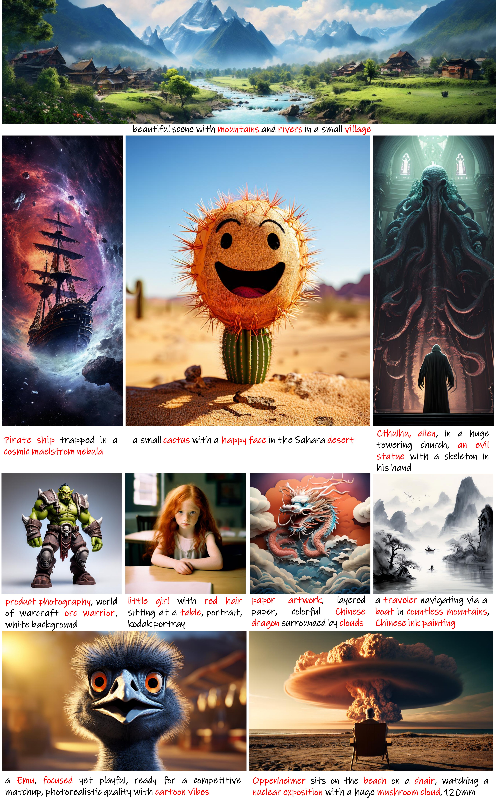
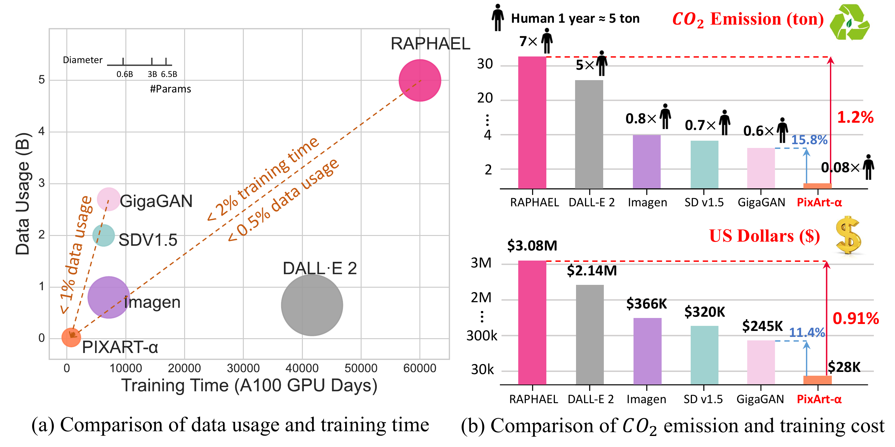
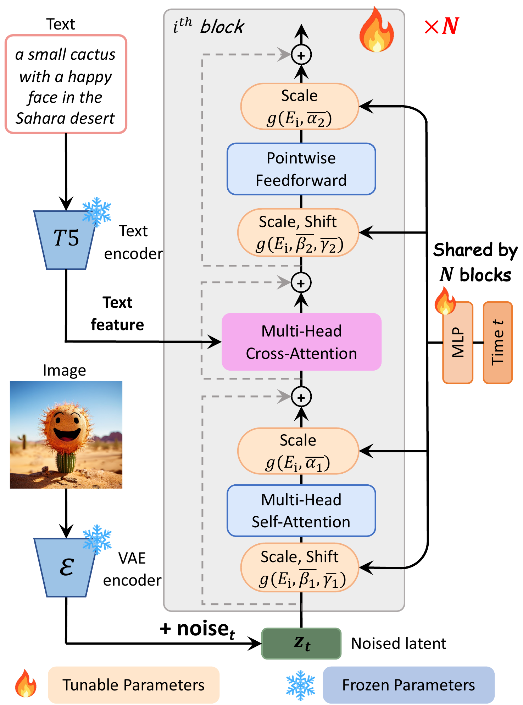
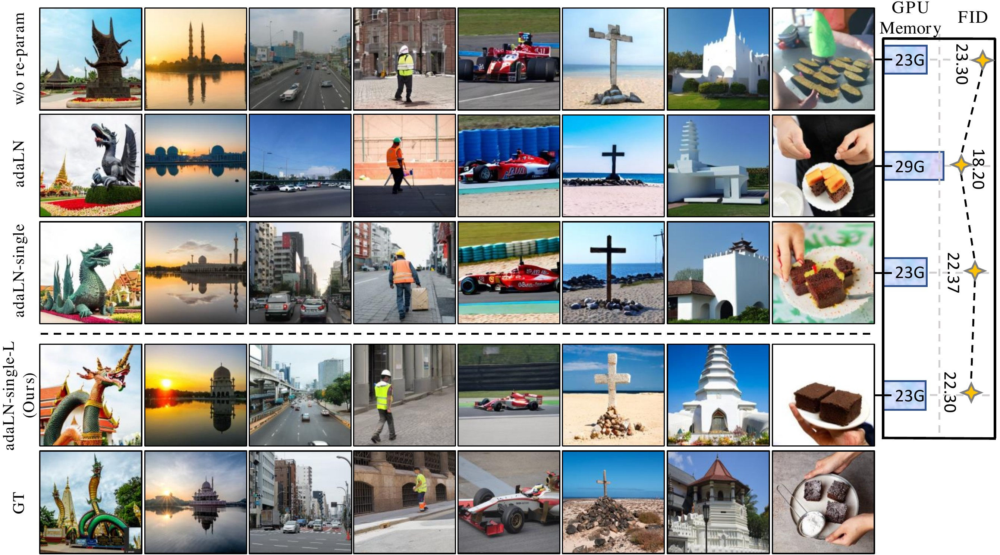

🎮 费曼一分钟（通俗速读）
文生图（T2I）训练极贵——Stable Diffusion 1.5 级别模型常需数百万 GPU 时。PixArt-α 的核心思路是「分阶段解耦」：不要一上来就 1024px + 文本 + 美学一起学，而是拆成三步——先学像素依赖（低分辨率、无文本），再学文图对齐，最后学美学与高分辨率。每一步只解决一个子问题，训练更稳、更省。
架构上在 DiT 里加 cross-attention 接 T5-XXL 文本，并用 adaLN-single（全局共享一组 scale/shift，而非每层独立 adaLN）把参数量从 833M 压到 611M。数据侧用 LLaVA 稠密 caption 替代短标签，提升语义对齐。全套训练约 753 A100·day（SD1.5 的 12%），成本 $28,400；COCO FID 7.32，原生 1024px 输出。
关键数字：3-stage training · adaLN-single 611M vs adaLN 833M · T5-XXL 120 tokens · Stage 1 约 64 V100 × 26 days。
📄 原文 Figure 1：质量 vs 训练成本（teaser）

Abstract
We introduce PixArt-α, a Diffusion Transformer (DiT) based text-to-image (T2I) model that achieves photorealistic image generation quality competitive with state-of-the-art image generators (e.g., Imagen, DALL·E 2, SDXL) while being significantly more training-efficient.
Our approach incorporates three core designs: (1) a three-stage training strategy that decouples learning of content, text-image alignment, and image quality; (2) an efficient DiT architecture with cross-attention and adaLN-single for text conditioning; (3) high-quality training data with LLaVA-generated dense captions. PixArt-α only requires 753 A100 GPU days (~$28,400) for training — 12% of Stable Diffusion v1.5 — and reaches COCO FID 7.32 at 1024px resolution.
我们提出 PixArt-α——基于 Diffusion Transformer 的文生图模型，生成质量可与 Imagen、DALL·E 2、SDXL 等 SOTA 竞争，同时训练效率显著更高。
三大设计：① 三阶段训练，解耦内容学习、文图对齐与图像质量；② 高效 DiT 架构，cross-attention + adaLN-single 做文本条件；③ LLaVA 稠密 caption 高质量数据。训练仅需 753 A100·day（约 $28,400），为 SD1.5 的 12%，1024px 下 COCO FID 7.32。
段落功能
摘要同时承诺「质量」与「效率」两条轴：对标商业级 T2I，但训练成本数量级下降。753 A100·day / $28,400 / FID 7.32 是可核查的 hook。
逻辑角色
论证链起点：问题（T2I 训练贵）→ 解法（三阶段 + 轻量 DiT + 好 caption）→ 证据（12% SD1.5 成本、SOTA 级 FID）。
1. Introduction
Recent T2I models (Imagen, Parti, SD, DALL·E 2) achieve remarkable quality but require massive computational resources — e.g., Stable Diffusion v1.5 training consumes ~6,250 A100 GPU days. This high cost limits research accessibility and environmental sustainability (CO₂ emissions).
Diffusion Transformers (DiT) (Peebles and Xie 2023) replace U-Net backbones with scalable Transformers, offering a promising path. However, naively training DiT for T2I from scratch at high resolution with text conditioning remains expensive and unstable.
Imagen、Parti、SD、DALL·E 2 等 T2I 模型质量惊艳，但计算资源消耗巨大——例如 SD1.5 训练约 6,250 A100·day，高成本限制研究可及性并带来环境负担（CO₂）。
DiT 用可扩展 Transformer 替代 U-Net，前景良好；但直接在高分辨率 + 文本条件下从零训练 DiT 仍昂贵且不稳定。
段落功能
建立「质量已够 vs 训练仍贵」的反差；DiT 是可扩展架构，但 T2I 端到端训练门槛未降。
逻辑角色
问题语境：为何不能简单把 DiT 当 U-Net 换皮？——多目标（像素、文本、美学、高分辨率）耦合导致训练难收敛、算力爆炸。
We present PixArt-α with three key contributions: (1) Training strategy decomposition — three stages progressively add text and resolution; (2) Efficient architecture — cross-attention + adaLN-single reduces params from 833M to 611M vs standard adaLN; (3) Enhanced captions — LLaVA dense descriptions improve text-image alignment. Total training: 753 A100 days, $28,400, 12% of SD1.5.
PixArt-α 三大贡献：① 训练策略分解——三阶段逐步引入文本与分辨率；② 高效架构——cross-attention + adaLN-single，相对标准 adaLN 从 833M 降至 611M；③ 增强 caption——LLaVA 稠密描述改善文图对齐。总训练 753 A100·day、$28,400，为 SD1.5 的 12%。
段落功能
Intro 末段浓缩训练/架构/数据三线贡献，并给出可对比的绝对数字（753 day、$28,400）。
论证技巧
把「解耦训练」从工程 trick 升格为方法论——这是全文 pivot，后续 Method 展开三阶段细节。
📄 原文 Figure 3：CO₂ / 训练成本对比

2. Method — 三阶段 · 架构 · 数据
2.1 Three-Stage Training Strategy
Stage 1 — Pixel dependency learning: Train DiT at 256×256 without text conditioning to learn spatial structure and visual priors. Uses internal high-quality image data. Training: ~64 V100 GPUs × 26 days.
Stage 2 — Text-image alignment: Introduce T5-XXL text encoder and cross-attention at 256×256. Fine-tune with text-image pairs using dense LLaVA captions. Focus: semantic alignment between prompts and content.
Stage 3 — High-resolution & aesthetic quality: Scale to 512→1024px with multi-aspect ratio buckets. Add aesthetic score filtering and quality-oriented data curation. Final model generates photorealistic 1024px images.
2.1 三阶段训练策略
阶段 1 — 像素依赖学习：256×256、无文本条件，学习空间结构与视觉先验；内部高质量图像数据；约 64 V100 × 26 天。
阶段 2 — 文图对齐：引入 T5-XXL 与 cross-attention，256×256 上用 LLaVA 稠密 caption 的图文对微调，聚焦语义对齐。
阶段 3 — 高分辨率与美学：512→1024px、多宽高比分桶；美学分数过滤与质量导向数据筛选；输出 1024px 写实图像。
训练流水线（自绘）
flowchart LR S1["Stage 1
256px · 无文本
像素先验"] --> S2["Stage 2
256px · T5-XXL
文图对齐"] S2 --> S3["Stage 3
512→1024px
美学 + 高分辨率"] S3 --> OUT["PixArt-α
611M · 1024px"]
设计取舍
Stage 1 无文本看似「浪费」，实则提供稳定 latent 流形；Stage 2 在低分辨率对齐文本更省算力；Stage 3 才上高分辨率——类似 curriculum learning，但按模态/分辨率解耦。
2.2 Efficient DiT Architecture
Built on DiT blocks with cross-attention layers for T5-XXL text features (max 120 tokens). Timestep conditioning via adaLN-single: a single shared MLP produces scale/shift parameters applied to all Transformer blocks, instead of per-block adaLN (as in original DiT).
This reduces parameters from 833M (adaLN) to 611M (adaLN-single) with negligible quality loss. Latent space uses standard VAE (SD's f8, 4 channels). Diffusion schedule: IDDPM with $v$-prediction.
2.2 高效 DiT 架构
DiT block 加 cross-attention 接入 T5-XXL 文本特征（最多 120 tokens）。时间步条件用 adaLN-single：单个共享 MLP 产生 scale/shift，作用于所有 block，而非每层独立 adaLN。
参数量从 833M（adaLN）降至 611M（adaLN-single），质量几乎无损。潜空间用标准 VAE（SD f8，4 通道）；扩散 schedule 为 IDDPM + $v$-prediction。
adaLN vs adaLN-single
原始 DiT 每层独立 adaLN MLP → 参数量随 depth 线性膨胀。adaLN-single 全局共享一组 $(\gamma, \beta)$，每层只复用——DiT-XL/2 规模下省 ~222M 参数。Fig.4 ablation 验证几乎无 FID 损失。
文本编码
T5-XXL（冻结）+ 120 token 上限：比 CLIP 文本塔语义容量更大，但推理更重——PixArt 系列后续 δ/Sigma 继续沿用此选择。
📄 原文 Figure 2：DiT 架构（cross-attention · adaLN-single）

2.3 Training Data & Captions
Internal dataset of tens of millions of high-quality images with resolution ≥1024px. Replace short tags with LLaVA-generated dense captions — rich semantic descriptions improve text-image alignment in Stage 2. Aesthetic scoring (LAION aesthetic predictor) filters low-quality samples in Stage 3. Multi-aspect ratio training buckets support flexible inference resolutions.
2.3 训练数据与 Caption
内部数千万张 ≥1024px 高质量图像。用 LLaVA 生成的稠密 caption 替代短标签——丰富语义描述改善 Stage 2 文图对齐。Stage 3 用 LAION 美学预测器过滤低质样本。多宽高比分桶支持灵活推理分辨率。
段落功能
数据线是「被低估的第三支柱」：好 caption + 美学过滤 + 高分辨率源图，与三阶段训练协同——Stage 2 吃 caption 质量，Stage 3 吃美学分数。
潜在漏洞
内部数据集细节未完全公开；LLaVA caption 质量与偏差继承自 VLM，可能放大某些语义偏好。
3. Experiments
Setup: Evaluate on MS-COCO 2014 validation (30K prompts, FID-30K protocol). Compare against SDv1.5, SDXL, RAPHAEL, DeepFloyd-IF, DALL·E 2, Imagen, etc. Metrics: FID, CLIP Score, T2I-CompBench (compositional generation).
Main Result: PixArt-α achieves COCO FID 7.32 at 1024px — competitive with or surpassing models trained with orders of magnitude more compute. Training cost: 753 A100 GPU days vs SD1.5's ~6,250 A100 days.
设置：MS-COCO 2014 val（30K prompt，FID-30K 协议）。对比 SDv1.5、SDXL、RAPHAEL、DeepFloyd-IF、DALL·E 2、Imagen 等。指标：FID、CLIP Score、T2I-CompBench（组合生成）。
主结果：PixArt-α 1024px 下 COCO FID 7.32——与算力大数个数量级的模型竞争或超越。训练 753 A100·day vs SD1.5 约 6,250 A100·day。
| Method | Resolution | COCO FID↓ | Training (A100·day) |
|---|---|---|---|
| SDv1.5 | 512 | 9.62 | ~6,250 |
| SDXL | 1024 | 6.94 | ~22,000+ |
| PixArt-α | 1024 | 7.32 | 753 |
- 论点↔证据：FID 7.32 略逊于 SDXL 6.94，但训练成本约为其 3.4%；相对 SD1.5 更优 FID + 12% 算力——Pareto 改进（Fig.1）。
T2I-CompBench: PixArt-α scores competitively on color, shape, texture binding tasks — demonstrating strong compositional text understanding from T5-XXL + dense captions.
User Study: Human evaluators prefer PixArt-α over SDv1.5 on overall quality and text alignment; competitive with SDXL on aesthetics at fraction of training cost.
Ablation — adaLN-single: Replacing adaLN with adaLN-single saves ~222M parameters with minimal FID degradation (Fig. 4).
T2I-CompBench：PixArt-α 在颜色、形状、纹理绑定等组合任务上表现 competitive——T5-XXL + 稠密 caption 带来强组合理解。
用户研究：人工评估在整体质量与文本对齐上偏好 PixArt-α 优于 SDv1.5；美学上与 SDXL 竞争，训练成本仅其一小部分。
消融 — adaLN-single：adaLN 换 adaLN-single 省约 222M 参数，FID 几乎无下降（Fig.4）。
- FID：自动指标锚定 COCO 分布匹配。
- CompBench：补 FID 不敏感的 compositional 能力。
- User Study：人工偏好验证感知质量，避免纯指标 gaming。
- Ablation：adaLN-single 是架构创新的独立证据链。
📄 原文 Figure 4：adaLN vs adaLN-single 消融

4. Conclusion
PixArt-α demonstrates that high-quality T2I models can be trained efficiently through training strategy decomposition, architectural efficiency, and enhanced data curation. The three-stage training decouples pixel learning, text alignment, and aesthetic quality; adaLN-single and cross-attention enable a compact 611M DiT; LLaVA captions boost semantic alignment.
With only 753 A100 GPU days and $28,400, PixArt-α achieves COCO FID 7.32 at 1024px, democratizing T2I research and reducing environmental impact. Code and models are released at github.com/PixArt-alpha/PixArt-alpha.
PixArt-α 证明：通过训练策略分解、架构效率与数据 curation，可以高效训练高质量 T2I 模型。三阶段解耦像素学习、文本对齐与美学质量；adaLN-single + cross-attention 实现紧凑 611M DiT；LLaVA caption 提升语义对齐。
仅 753 A100·day、$28,400 即达 COCO FID 7.32（1024px），降低 T2I 研究门槛与环境影响。代码与模型已开源。
段落功能
收束三线贡献 → 效率-质量 Pareto → 开源承诺；强调「民主化 T2I 研究」的社会价值（ICLR 2024 叙事）。
潜在漏洞
FID 仍略逊于 SDXL；内部数据不可完全复现；T5-XXL 推理成本未在结论讨论；后续 PixArt-Σ 进一步改进但未在此展开。
符号速查表
| 符号 / 术语 | 含义 |
|---|---|
| DiT | Diffusion Transformer，用 Transformer block 替代 U-Net 的扩散主干 |
| adaLN | Adaptive Layer Norm，每层独立 MLP 从 timestep 生成 $(\gamma, \beta)$ |
| adaLN-single | 全局共享一组 scale/shift，611M 参数（vs adaLN 833M） |
| T5-XXL | 冻结文本编码器，最大 120 tokens |
| $v$-prediction | 扩散目标预测速度场 $v$，IDDPM schedule |
| Stage 1/2/3 | 像素先验 → 文图对齐 → 高分辨率美学 |
| LLaVA caption | VLM 生成的稠密语义描述，替代短标签 |
| FID-30K | COCO 30K prompt 生成 vs 参考集的 Fréchet Inception Distance |
| 753 A100·day | 三阶段总训练量，约为 SD1.5 的 12% |
| 64 V100 × 26 days | Stage 1 像素依赖学习阶段的典型配置 |
论证结构总览
→ 观察（DiT 可扩展但端到端 T2I 仍贵且不稳定）
→ 论点（三阶段解耦 + adaLN-single/cross-attn 轻量 DiT + LLaVA 稠密 caption）
→ 方法（Stage1 256px 无文本 → Stage2 T5 对齐 → Stage3 1024px 美学；611M；120 tokens）
→ 证据（753 A100·day / $28,400 / 12% SD1.5；COCO FID 7.32；CompBench + User Study；Fig.1–4 ablation）
→ 结论（高效 T2I 民主化 · ICLR 2024 · 开源）
核心主张（一句话）
通过训练目标解耦、adaLN-single 参数压缩与高质量 caption，PixArt-α 以 SD1.5 约 12% 的训练成本达到 1024px 商业级 T2I 质量（COCO FID 7.32）。
来源：arXiv:2310.00426 · ICLR 2024 · Huawei Noah's Ark Lab · Code: PixArt-alpha
🧩 结构化十问（AI 解构）
让 AI 当助教，从十个角度提取论文骨架。
Q1 · 论文试图解决什么问题？
Q2 · 这是否是一个新问题？
Q3 · 要验证什么科学假设？
Q4 · 有哪些相关研究？如何归类？
- DiT 基础：Peebles & Xie 2023（adaLN DiT）
- LDM/T2I：Stable Diffusion, Imagen, DALL·E 2, SDXL
- 高效训练：curriculum / multi-stage（本文系统化三阶段）
- Caption：LLaVA, BLIP 等 VLM caption
Q5 · 解决方案的关键是什么？
Q6 · 实验是如何设计的？
Q7 · 用什么数据集评估？代码开源吗？
Q8 · 实验结果是否很好支持了假设？
Q9 · 这篇论文到底有什么贡献？
Q10 · 下一步可以做什么？
🔬 深挖追问
第一性原理 · 为何解耦训练有效？
扩散模型同时学 $p(x)$、$p(x|c)$ 与高分辨率 $p(x_{\rm hi}|c)$ 是多目标耦合优化：文本梯度与高频细节梯度在早期互相干扰。Stage 1 先学 $p(x_{256})$ 建立 smooth latent manifold；Stage 2 在此流形上注入 $c$；Stage 3 只做分辨率/美学微调——每步 conditioning 空间更小，sample efficiency 更高。本质是 curriculum + modality decoupling。
第一性原理 · adaLN-single 为何够用？
adaLN 每层独立 MLP 假设「不同 depth 需要不同 timestep 调制强度」。PixArt-α 发现：T2I DiT 中全局 timestep 信号已足够——各层共享 $(\gamma, \beta)$ 不损 expressivity，因为 cross-attention 已承担文本条件，self-attention 承担 spatial mixing。省下的 222M 参数可转投 depth 或 data。
第一性原理 · Caption 即监督信号
短 tag（「dog, park」）只覆盖名词共现；LLaVA 稠密 caption（「A golden retriever sitting on green grass in a sunny park…」）提供属性-关系-场景细粒度监督。T5-XXL 编码长文本后，cross-attention 收到 richer key/value——CompBench 颜色/形状绑定提升的 root cause 可能在此。
批判性思维 · 我们还没问的根本问题（盲区）
- 753 day 的可复现性：内部数据 + LLaVA caption pipeline 是否完全开源？社区复现可能只能复现架构，难复现数据。
- Stage 1 必要性：若直接从 Stage 2 开始（公开 LAION + caption），成本/质量曲线如何？论文 ablation 相对简略。
- FID vs 感知质量：FID 7.32 vs SDXL 6.94——user study 称 aesthetic competitive，但 automatic metric 仍略输；是否存在 metric gap？
- T5-XXL 推理税：训练省了，推理时 T5-XXL 4.7B 参数 + 120 tokens 的 latency 未与 CLIP-text SD 公平对比。
- 环境叙事：Fig.3 CO₂ 估算依赖 GPU 型号与能源 mix 假设；753 A100·day 是否含 Stage 1 的 V100？加总口径需仔细核对。
- 后续演进：PixArt-Σ 进一步降低训练成本并提升质量——α 的三阶段 recipe 有多少被保留 vs 被替换？